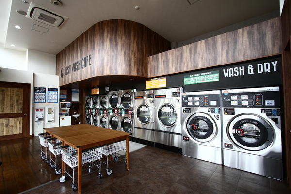

四宮店オープン記念のご案内
- ホーム
- 四宮店オープン記念のご案内
- コインランドリーグリーン四宮店は8月29日にOPENいたします、OPEN記念として9月1日まで半額セールを実施致します。皆様のご利用を心よりお待ちしております。
- 洗濯乾燥機
- 17Kg/10Kg 料金 洗濯乾燥標準500円 洗濯乾燥少量300円 洗濯のみ400円 乾燥のみ100円12分 27Kg/16Kg 料金 洗濯乾燥標準900円 洗濯乾燥少量700円 洗濯のみ600円 乾燥のみ100円10分
- 乾燥機
- 27Kg 料金 100円 9分 20Kg2× 料金 100円10分 3台 料金 100円12分
- 期間
- 8月29日～9月1日
- 所在地
- 〒162-0846 埼玉県浦和市四宮町251-133
- アクセス
- 北浦和駅から徒歩9分
